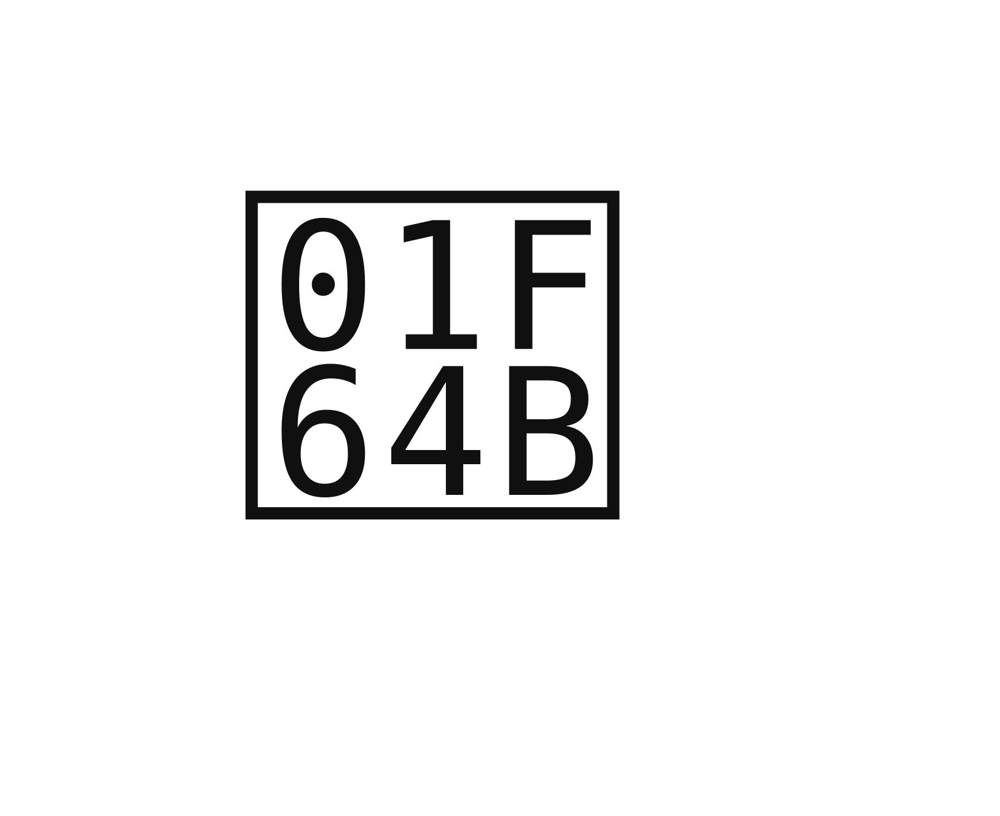

¿Cómo puedes ayudar?
Hay muchas formas de ser parte del cambio. Elige la que mejor se adapte a tu tiempo, recursos o energía.
VOLUNTARIADO
Únete a nuestras jornadas de campo los fines de semana. No necesitas experiencia, solo empatía y ganas de ayudar.
Ser aliado
DONACIÓN
DE BIENES
Alimentos, medicinas, útiles escolares, mantas, pañales y artículos de limpieza son siempre bienvenidos en las jornadas.
APORTES
ECONÓMICO
Tu aporte económico nos ayuda a cubrir gastos veterinarios, materiales didácticos y la logística de cada jornada.
S/20 = 1 semana de comida para un animal
S/50 = Útiles para un niño
ALIANZAS INSTITUCIONALES

Si eres una ONG, albergue o institución educativa, trabajemos juntos por un mayor impacto social y animal en Lima.
Ser aliadoDIFUNDIR 📢
Comparte nuestras publicaciones, convocatorias y misión en tus redes. Cada compartido suma más voluntarios a las brigadas.


Y SE PARTE DE ELLAS 🤍